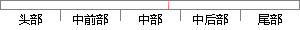

因此，双站接收到的辐射源信号可以表示为：
片段位置图

相似结果|
相似片段 1：)是天线只接收到一个目标回波信号时，对该目标的DOA估计结果，图中DOA为0。的点表示该时刻没有检测到目标。从图中可以看出估计得到的目标DOA非常连续，但是由于实际数据处理中没有目标真实的DOA，因此
相似片段 2：影响因子，是一个无量纲标量，表示接收到的第k时间片信号对位置信息场贡献的大小，当观测时间内侦察机位置变化不大情况下，反可以近似看作1；ArAX)为第k时间片辐射源信号到达两侦察机时问兰H。．^，，¨一
相似片段 3：部分广播直射信号进入，另外还有多径信号进入，故接收机1所接收到的信号可以表示为：gl(f)=klls(t)+后l2p(t)+kuf(t) (4．4)接收机2是设计为接收广播电台直射信号，目标所反射的回波
相似片段 4：以COS护+2a+2cr(2-2)(2-3)由于直射信号和目标回波信号的时间延迟f和接收站接收目标回波信号的到达角乡可以由系统测出，侦察站与外辐射源距离a可以精确预知，因此通过上两式可计算出目标坐标
相似片段 5：，在外辐射源较多的情况下，可以利用目标反射信号的多普勒频移信息进一步提高定位精度。2．研究了接收站无法接收到直达信号情况下的定位算法。目标反射信号的多普勒频移信息中包含了目标的位置和速度信息，在一定条件下
相似片段 6：=l∑x?∑Y。∑xiY(6)其中，z。为单次接收到的辐射源信号方位值，Y：为单次接收到的辐射源信号的幅度值，具体求解步骤见参考文献[6]。天线方向图在不同频段形状有所变化，因此测向包络函数的系数a
相似片段 7：，那么外辐射源的发射信号可以表示为g=exp(j2xfi)，设该点散射强度为仃，则接收信号可表示为：G(f)=crexp(j2xf(t-r))(5一1)32 基于外辐射源的无源雷达成像模型及算法研究式中
相似片段 8： 表示参考天线中的噪声，N表示接收信号的长度。 第二章 基于 Adcock天线的外辐射源雷达单目标测向技术 15同样回波天线接收的信号变换到数字基带以后，可以表述为： C M2 /1 1
|
※ 片段修改建议 ※
近似词参考：- 因此：是以 因而
- 接收：领受 吸收 接管
- 信号：旌旗灯号
- 表示：暗示 默示 示意 透露表现 表现
系统自动生成语句：是以，双站领受到的辐射源旌旗灯号可以暗示为：
注：本片段修改建议为系统自动生成，仅供参考。